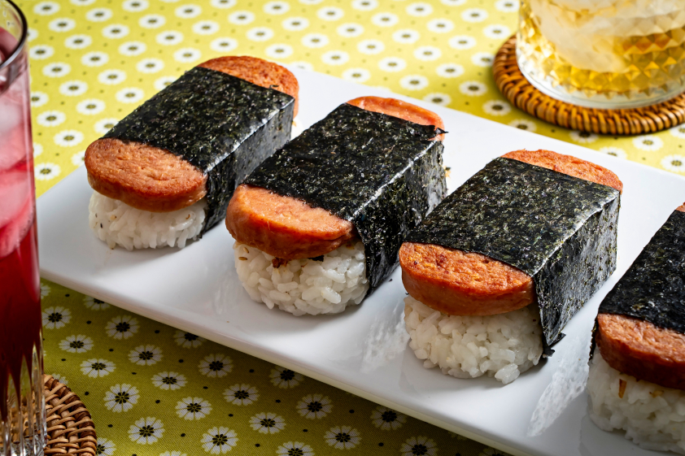

What is a Spam Musubi?
If you have lived or visited Hawaii at some point, you probably have tried the classic Hawaiian snack. Spam musubi is a delicious, sweet and savory dish that consists of a grilled slice of Spam and a block of rice wrapped together with a piece of nori. Drawing inspiration from sushi, a musubi is wrapped the same way a a traditional piece of Japanese onigiri. If you want to get your fix of spam musubi or want to try it for the first time, follow this simple recipe below!
Ingredients
In order to make spam musubi, you will need:
- 12 ounces Spam
- 1/4 cup oyster sauce
- 1/4 cup soy sauce
- 1/2 cup sugar
- 2 sheets of nori roasted seaweed
- 6 cups sushi rice - click HERE for sushi rice recipe
Steps
- Slice the SPAM into about 8-10 slices (depending on how thick you like it) and put in a Ziplock bag.
- Mix oyster sauce, soy sauce and sugar until sugar is dissolved and add to the bag with the SPAM. Marinate for about 15 minutes.
- Drain off marinade and fry SPAM on each side over medium heat until slightly crispy or until desired doneness. Some people like to glaze the SPAM with the marinade/sauce AFTER frying, either way tastes great!
- Place a strip of nori on a cutting board or clean surface (shiny side down).
- Place your Musubi mold across the middle of the nori.
- Add Sushi Rice to the mold, pressing down firmly and evenly, so there is about 1-1 ½ inches of rice. (dip the mold and your fingers in water as you go to prevent sticking)
- Next, remove the mold from the rice. Now you will have a nice little block of rice right on the nori.
- Add some of the cooked spam to the top. Wrap up one side of the nori and stick it to the top of the SPAM, then wrap up the other side. Just like you are wrapping a nice little package. Use a little water on your finger to seal if needed. Serve warm.
- Some like it dipped in soy sauce, some like it with ketchup, and some like it as is. Enjoy!
Return to top
Return to recipe page